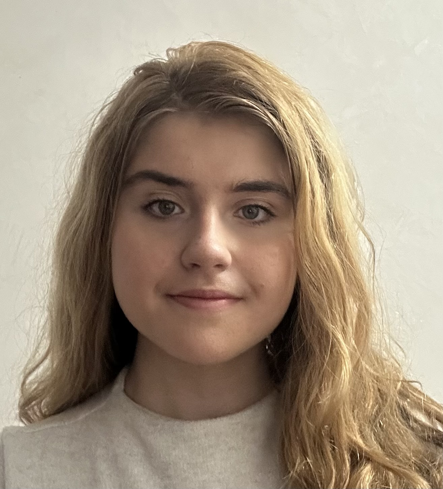

CFGM d'assistència al producte gràfic interactiu
EMAD Escola Municipal d'Art i Disseny de la Garriga

Dissenyadora gràfica interactiva i desenvolupadora d’aplicacions multiplataforma. Combino creativitat i tecnologia per crear solucions digitals clares, funcionals i coherents. Tinc experiència en gestió de contingut web, maquetació responsive i disseny d’interfícies. Em defineixen l’atenció al detall, la versatilitat i la capacitat d’adaptar-me ràpidament a nous reptes.
CFGM d'assistència al producte gràfic interactiu
EMAD Escola Municipal d'Art i Disseny de la Garriga
CFGS de desenvolupament d'aplicacions multiplataforma
La Salle de Gràcia - Cursant
Web interactiva per promocionar una tipografia pròpia
Projecte final del CFGM de Disseny i Desenvolupament Web, encarregat per l’escola. L’objectiu era crear una pàgina web interactiva per presentar, explicar i promocionar una tipografia modular pròpia, amb opció d’adquirir-la. Els programes utilitzats: HTML5, CSS3, Adobe Illustrator. Què demostra: Capacitat per unir disseny gràfic i desenvolupament web, maquetació responsive i enfocada a l’usuari i preparació i optimització de material gràfic per a web
Enllaç al projecteGestió d’una Biblioteca
Projecte de pràctica desenvolupat durant el cicle DAM amb l’objectiu de crear un programa pensat per facilitar la gestió de biblioteques. El sistema permet administrar llibres, usuaris i préstecs de manera eficient. Els programes utilitzats: Java Què demostra: Capacitat d’aprenentatge i ús d’ArrayList per gestionar col·leccions de dades.
Enllaç al repositoriProgramació d'un joc amb Python
Projecte de pràctica desenvolupat durant el cicle DAM amb l’objectiu de crear un joc, per posar en pràctica la nostra creativitat i a més a més aprendre a programar. El meu joc consisteix a fer que el jugador és un quadrat que es mou d’esquerra a dreta ha de passar pels forats de les plataformes per no quedar atrapat i perdre. Els programes utilitzats: Python Què demostra: Capacitat d’aprenentatge i creativitat
Enllaç al repositoriDisseny de rètol de restaurant
Bar La Granja, Vallromanes
Disseny de rètol exterior
Gestió de contingut web (pràctiques)
2B STUDIO SCP, Granollers
Obtenció, correcció i tractament d’elements multimèdia per a webs i productes gràfics interactius. Composició i preparació de textos i imatges per a l’edició web i multimèdia
Java, HTML/CSS, Python, SQL, Pack Adobe, WordPress, Canva
Creativitat, Pensament crític, Treball en equip, Adaptabilitat
Anglès (A1)
Català (Natiu)
Castella (Natiu)